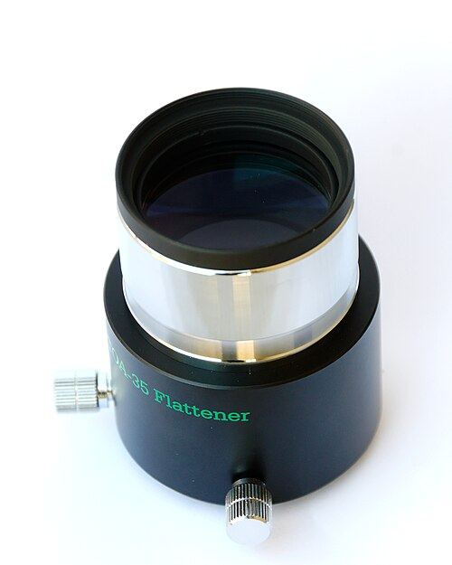

1. Il telescopio raccoglie luce prima di ingrandire
Davanti a uno strumento nuovo, il primo numero che attira l’attenzione è spesso l’ingrandimento. Eppure il compito fondamentale del telescopio comincia altrove: intercettare luce e formare un’immagine sul piano focale. L’apertura è il diametro utile dell’obiettivo o dello specchio principale. A parità delle altre condizioni, un diametro maggiore raccoglie più luce e rende disponibile una risoluzione angolare migliore. Il vantaggio deve però attraversare atmosfera, meccanica e qualità ottica prima di arrivare al tuo occhio.
La focale descrive la scala dell’immagine formata. Una focale più lunga proietta lo stesso angolo del cielo su una dimensione lineare maggiore al piano focale. Il rapporto focale F/D confronta focale e apertura, usando le stesse unità. Un telescopio con F=1000 mm e D=200 mm è f/5. Il valore non esprime da solo quanto un’immagine visuale sia luminosa, perché in visuale intervengono anche ingrandimento e pupilla d’uscita.
Marie-Lan Nguyen ( Jastrow ) · CC BY 3.0 · Licenza e condizioni
Nel rifrattore una lente o un gruppo di lenti forma l’immagine. Nel riflettore il ruolo principale spetta a uno specchio; in un Newton uno specchio secondario devia il fascio verso il focheggiatore laterale. I catadiottrici combinano elementi riflettenti e correttivi: una focale relativamente lunga può stare in un tubo compatto. Queste famiglie descrivono percorsi della luce, non una classifica assoluta. Apertura, ingombro, campo corretto, manutenzione ed equilibrio termico entrano nella scelta.
Una lente semplice non porta tutti i colori allo stesso fuoco: i rifrattori possono usare gruppi progettati per ridurre l’aberrazione cromatica. Un riflettore può avere ostruzione centrale e aberrazioni fuori asse; i correttori lavorano su problemi specifici. Nessuna etichetta rende un’ottica esente da ogni difetto. Impara a distinguere un errore di fuoco, un disallineamento e un limite atmosferico prima di giudicare lo strumento da una singola immagine.
Per un confronto iniziale, pensa alla superficie di raccolta come proporzionale a D² in un’apertura circolare libera. Raddoppiare il diametro significa quadruplicare l’area geometrica, non ottenere quattro volte la risoluzione né vedere ogni oggetto quattro volte meglio. Trasmissione, ostruzioni e contrasto richiedono ulteriori considerazioni. Nella prima scelta è spesso più utile uno strumento che puoi usare regolarmente di uno più grande che non riesci a montare o trasportare.
Riferimenti: Treccani · Telescopio · Treccani · Telescopio e risoluzione
2. Due occhi, un campo ampio: leggere un binocolo
Un binocolo può essere il primo strumento astronomico senza essere soltanto un passaggio provvisorio. Offre un campo ampio, permette di osservare con entrambi gli occhi e mantiene un legame immediato con le figure riconosciute a occhio nudo. Ammassi estesi, campi della Via Lattea e cambiamenti della Luna possono diventare esperienze molto istruttive. Non aspettarti invece che un piccolo binocolo mostri i dettagli planetari di un telescopio ad alto ingrandimento.
Andreas Klehr · CC BY-SA 4.0 · Licenza e condizioni
La sigla 8×42 indica otto ingrandimenti e obiettivi da 42 mm. Il rapporto D/M fornisce la pupilla d’uscita geometrica: qui 5,25 mm. È il diametro del fascio che emerge dall’oculare. La pupilla del tuo occhio non ha una dimensione universale: dipende da luce, età e condizioni individuali. Se il fascio è più largo della pupilla disponibile, una parte della luce non entra nell’occhio e l’apertura effettivamente usata si riduce.
Il campo reale, dichiarato in gradi o come ampiezza a una distanza, indica quanto panorama rientra nella visione. Leggi anche distanza pupillare, estrazione pupillare, massa e regolazioni. Se porti occhiali, la comodità dipende da quanto puoi avvicinare gli occhi senza perdere il campo; se i due occhi richiedono correzioni differenti, la regolazione diottrica va impostata secondo il manuale. Un’immagine sdoppiata persistente non deve essere compensata sforzando la vista.
La stabilità è decisiva. Un ingrandimento maggiore amplifica anche il movimento delle mani. Appoggiare i gomiti, usare una seduta o un supporto adatto può rivelare stelle che a mano libera erano nascoste dal tremolio. Un binocolo pesante o ad alto ingrandimento può richiedere una montatura dedicata. Non valutare la comodità soltanto guardando diritto davanti a te: prova una direzione alta, dove posizione del collo e altezza del supporto diventano evidenti.
Prima di cercare una nebulosa, impara a rendere comoda la visione. Regola la distanza fra i due tubi finché percepisci un unico campo circolare; imposta poi il fuoco e la compensazione diottrica nella sequenza indicata dal costruttore. La regolazione diottrica compensa una differenza fra i due occhi, mentre la messa a fuoco porta il bersaglio alla distanza ottica corretta. Su modelli a fuoco individuale la procedura è diversa: una sola manopola centrale non è una caratteristica universale.
I prismi raddrizzano l’immagine e ripiegano il percorso della luce. Nei binocoli a prismi di Porro i tubi hanno spesso un profilo sfalsato; nei modelli a tetto il corpo può essere più lineare. La forma non basta a stabilire qualità o luminosità: contano progetto, trattamenti, allineamento e comfort. Verifica una stella al centro e poi verso il bordo, senza confondere la perdita di nitidezza fuori asse con il tremolio delle mani.
Confronta un 8×42 e un 10×50 attraverso una domanda concreta: riesci a riconoscere meglio le stelle deboli del medesimo ammasso? Le pupille geometriche sono simili, 5,25 e 5 mm; il secondo offre scala maggiore e più apertura, ma richiede maggiore stabilità. Non basta confrontare i numeri stampati: ripeti l’osservazione appoggiato e a mano libera. Il miglioramento ottenuto dal supporto può essere più evidente della differenza fra i due strumenti.
Riferimenti: Treccani · Binocolo · NASA · Binoculars: A Great First Telescope
3. La stabilità è una prestazione osservativa
Lo strumento sembra fermo quando nessuno lo tocca; appena regoli il fuoco, però, l’immagine comincia a oscillare. Questa scena mostra perché il supporto non è un accessorio marginale. Treppiede, testa, montatura e terreno formano una struttura elastica. La vibrazione dipende dalla massa, dalle leve, dalla distribuzione del carico e dal modo in cui il sistema smorza il movimento. Una capacità dichiarata in chilogrammi non racconta da sola tutte queste condizioni.
Estendere molto le gambe può ridurre la rigidità; appoggiarle su una superficie che flette introduce un’altra sorgente di movimento. Il vento agisce su tubo, paraluce e cavi, non soltanto sul peso verticale. In fotografia anche piccoli spostamenti contano durante una posa. In visuale puoi attendere che una vibrazione si smorzi; in una ripresa lunga la stessa oscillazione può lasciare una traccia irreversibile nel fotogramma.
Prepara il terreno e verifica i serraggi secondo il manuale. Non stringere qualunque parte con la massima forza possibile: alcune regolazioni hanno limiti e componenti delicati. Il livellamento può essere richiesto per determinate procedure, ma non rende da solo una montatura equatoriale allineata al polo. Conserva la distinzione fra base stabile, geometria degli assi e modello di puntamento del software.
Osserva come cambia l’immagine quando tocchi il focheggiatore, quando appoggi un piede vicino al supporto e quando passa una raffica. Questi confronti aiutano a individuare la sorgente, purché il bersaglio e l’ingrandimento restino gli stessi. Se la vibrazione nasce dal balcone, cambiare soltanto l’oculare non risolve la struttura; se nasce da un cavo teso, puoi migliorare il risultato organizzandone il percorso.
La testa governa il movimento; le gambe sostengono la base. Una testa fotografica può funzionare bene a bassa altezza ma rendere scomodo un binocolo rivolto vicino allo zenit. Una colonna molto estratta aumenta l’altezza e spesso anche la flessibilità. Un parallelogramma ben bilanciato consente di variare la quota dell’oculare conservando approssimativamente il puntamento: è utile quando più persone osservano, ma richiede spazio e carichi previsti dal progetto.
Prima del buio prova tutta l’escursione necessaria. Controlla se tubo, contrappesi o cavi possono incontrare gambe e accessori. Un carico appeso al treppiede non è una soluzione universale: se oscilla al vento può peggiorare la stabilità. La scelta efficace deriva da una prova controllata, dal manuale e dal terreno, non da una portata nominale letta isolatamente.
Lionel Allorge · CC BY-SA 3.0 · Licenza e condizioni
Riferimenti: Sky-Watcher · Manuali ufficiali delle montature
4. Puntare e inseguire sono due compiti differenti
La montatura permette di orientare il tubo e di mantenerlo diretto verso un bersaglio. Puntare significa raggiungere una direzione; inseguire significa compensarne il cambiamento nel tempo. Un sistema può eseguire bene una di queste operazioni e richiedere ancora lavoro sull’altra. La rotazione terrestre resta presente anche quando il bersaglio appare fermo al centro di un’immagine seguita automaticamente.

Marie-Lan Nguyen · CC BY-SA 4.0 · Licenza e condizioni
Nell’altazimutale i due movimenti corrispondono intuitivamente a direzione lungo l’orizzonte e altezza. Per seguire una stella durante la notte devono essere normalmente coordinati. Un Dobson è una soluzione altazimutale pratica per molti impieghi visuali. La geometria può produrre rotazione del campo rispetto al sensore durante l’inseguimento: per pose lunghe si considera una montatura equatoriale oppure una derotazione appropriata, non soltanto la presenza di motori.
Nell’equatoriale l’asse polare viene orientato parallelamente all’asse terrestre. All’emisfero boreale il polo è sopra l’orizzonte nord a un’altezza pari alla latitudine nel modello geometrico. Una volta raggiunta la direzione della stella, l’inseguimento siderale avviene principalmente ruotando quell’asse. La Polare è vicina al polo, ma non coincide con esso: puntare il tubo alla stella non è la stessa cosa che allineare l’asse meccanico.
GoTo, motorizzazione, guida e allineamento polare risolvono problemi differenti. Il GoTo usa un modello per raggiungere un oggetto; il motore produce movimento; la guida misura e corregge deviazioni; l’allineamento definisce la geometria rispetto alla Terra. Non usare questi nomi come sinonimi. Per i principi geometrici torna alla lezione sulle coordinate.
Riconosci gli assi, poi confronta il movimento
Azzurro: asse AR, diretto verso il polo celeste dopo l’allineamento. La Polare è un riferimento vicino al polo, non la sua posizione esatta.
Nella foto, la freccia azzurra prolunga la direzione dell’asse polare della montatura; quella dorata segue l’asse di declinazione e il contrappeso. Il tubo può puntare altrove: non deve restare parallelo all’asse polare durante l’osservazione. Le frecce sono indicazioni sulla proiezione fotografica, non una misura dell’allineamento della postazione ripresa. Non possiamo ricavare dalla sola foto il suo errore polare.
L’ascensione retta è una coordinata del cielo; l’asse chiamato AR compensa la rotazione apparente attraverso una variazione dell’angolo orario. Seguendo una stella, la sua ascensione retta resta quasi costante nell’intervallo della serata, mentre cambia l’angolo orario. La declinazione serve a scegliere il parallelo celeste. Questa distinzione spiega perché inseguire non significhi cambiare continuamente le coordinate di catalogo del bersaglio.
Riferimenti: Sky-Watcher · Manuali ufficiali delle montature · Treccani · Coordinate astronomiche, PDF
5. Smart telescope: comprendere una postazione integrata
Immagina una serata in cui lo strumento riconosce il campo stellare, raggiunge un bersaglio e aggiorna sullo schermo un’immagine che diventa progressivamente più leggibile. Il primo risultato può arrivare senza costruire un treno ottico separato e senza regolare manualmente ogni operazione. Per capire quello che stai osservando, però, è utile ricostruire la catena nascosta dentro la scatola: ottica, sensore, motori, elaborazione e interfaccia continuano a svolgere funzioni differenti.
El Mexicano · CC BY-SA 4.0 · Licenza e condizioni
Uno smart telescope riunisce normalmente un sistema ottico, una camera, una montatura motorizzata e un computer di controllo. Il dispositivo può gestire puntamento, messa a fuoco e combinazione delle immagini attraverso un’applicazione. Le funzioni disponibili variano con modello, accessori e versione del software. Non è sufficiente la parola “smart” per dedurre apertura, campo, qualità del sensore, presenza di un oculare o possibilità di esportare i dati originali.
La distinzione più utile è fra esperienza visuale e osservazione assistita dal sensore. Quando l’immagine arriva da una camera e si accumula sullo schermo, la sua leggibilità dipende anche da esposizione ed elaborazione. Una nebulosa colorata sul telefono non descrive automaticamente ciò che vedresti a occhio attraverso un piccolo telescopio. Entrambe le esperienze possono essere interessanti: bisogna sapere quale informazione produce lo strumento e come viene rappresentata.
Il riconoscimento del campo, spesso chiamato plate solving, confronta le posizioni delle stelle nell’immagine con un catalogo. Serve a ricostruire dove sta guardando la camera. Non dimostra da solo che la montatura sia allineata al polo, che l’inseguimento sia perfetto o che il bersaglio presenti dettaglio sufficiente. Un campo coperto da nubi, troppo povero di stelle o attraversato da ostacoli può rendere più difficile il riconoscimento. Per questo luogo e cielo rimangono parte della postazione anche quando il puntamento è automatico.
Dopo aver raggiunto il bersaglio, lo strumento può acquisire immagini successive e combinarle. In un caso ideale, molte misure indipendenti permettono di distinguere meglio un segnale debole dal rumore casuale. L’operazione non aggiunge apertura all’ottica e non garantisce la rimozione di ogni difetto. Fuoco errato, saturazione, gradienti luminosi, vibrazioni e errori sistematici richiedono controlli specifici. L’automazione rende più agevoli alcuni passaggi, ma non modifica le cause fisiche che limitano la ripresa.
Molti sistemi compatti lavorano con una geometria altazimutale. Per seguire un astro variano altezza e azimut, mentre l’orientamento del campo può cambiare rispetto alle stelle. È la rotazione di campo: mantenere il bersaglio vicino al centro e mantenere tutto il fotogramma orientato nello stesso modo sono due problemi diversi. Un programma può riallineare immagini successive; se il singolo fotogramma contiene già una scia o è mosso, il riallineamento non lo rende automaticamente equivalente a una posa nitida.
Scatti sovrapposti
Registrazione
Blu: primo scatto · Oro: secondo scatto.
Nel confronto disattiva il riallineamento, cambia l’angolo e osserva soprattutto le stelle lontane dal centro. Poi attiva la registrazione. La stella centrale può coincidere già prima, mentre le altre si spostano: un centro stabile non prova che l’intero campo mantenga orientamento costante. Le aree ai bordi non rimangono necessariamente comuni a tutti gli scatti; in una ripresa reale la registrazione può comportare margini irregolari o ritagli. Lo schema mostra la geometria, non il modo specifico in cui un’app decide di esportare il risultato.
Alcuni strumenti offrono anche una modalità equatoriale con un supporto e una procedura adatti. Non bisogna dedurla da una recensione di un altro modello o da una vecchia FAQ. Per il sistema illustrato, il produttore pubblica un tutorial dedicato alla modalità equatoriale: la procedura riguarda l’orientamento e la stabilità dell’insieme, non una semplice impostazione capace di correggere qualsiasi montaggio. Consulta la documentazione della versione usata e verifica peso, fissaggio e disposizione del treppiede; inclinare uno strumento cambia anche il suo equilibrio meccanico.
Prima di programmare una sessione, scegli un bersaglio compatibile con campo e scala dell’immagine. Un oggetto esteso può richiedere un mosaico, se il sistema lo supporta; un pianeta piccolo non acquista dettaglio soltanto perché il software ne riconosce il nome. L’interesse didattico di questi strumenti comprende proprio il confronto fra obiettivo, campo, risoluzione e durata dell’integrazione. Non esiste una configurazione che renda ugualmente favorevoli galassie, Luna, pianeti e grandi porzioni di Via Lattea.
Per proseguire nell’elaborazione, controlla quali file puoi conservare e trasferire. Una fotografia pronta per la condivisione e una sequenza di dati originali hanno ruoli differenti. Formato, calibrazione già eseguita, metadati, singoli fotogrammi e immagine integrata dipendono dal dispositivo. Conservare il prodotto sul telefono non dimostra automaticamente che siano stati salvati anche tutti i file scientifici: verifica l’esportazione effettiva prima di una serata importante.
Lo smart telescope può essere un ponte fra prima osservazione e studio dei dati, anche quando non si vuole montare una postazione modulare. Per utilizzarlo con consapevolezza, torna ai principi delle coordinate, della luce e del sensore. Per osservare il Sole servono comunque filtro e procedura specificamente approvati per l’ottica: la presenza di una modalità nell’app non rende sicuro un dispositivo privo della protezione corretta.
Continua con segnale, rumore e integrazione e con le funzioni dei programmi di elaborazione. Per il bersaglio della serata, confronta la carta del cielo del mese e le effemeridi locali.
Riferimenti: Seestar/ZWO · Tutorial ufficiale della modalità equatoriale · AAS · Sicurezza nell’osservazione solare
6. Fissare non significa soltanto far combaciare
Anelli, barre, morsetti e adattatori collegano parti che hanno masse e leve differenti. Un raccordo può avere il diametro giusto ma una battuta insufficiente, una filettatura diversa o una lunghezza che modifica il treno ottico. Prima di assemblare identifica standard, passo, profondità utile e modalità di bloccaggio. Non dedurre la compatibilità soltanto dall’aspetto di due pezzi o da un nome commerciale simile.
Marie-Lan Nguyen / Jastrow · CC BY 2.5 · Licenza e condizioni
Il baricentro della configurazione cambia quando aggiungi camera, diagonale, cercatore o ruota portafiltri. Il bilanciamento deve riferirsi alla postazione completa e seguire le indicazioni del produttore. Non liberare un asse senza mantenere il controllo del carico, e non considerare il contrappeso una decorazione. La sua posizione modifica il momento rispetto all’asse, non soltanto il peso complessivo.
Un componente fissato male può scivolare; un fissaggio molto lungo o flessibile può cambiare posizione durante il movimento. Nelle riprese, flessioni relative fra telescopio principale e sistema di guida possono produrre errori anche se la guida sembra precisa. La stabilità deve attraversare tutti i collegamenti. Riduci le parti inutili, evita cavi che tirano e controlla il serraggio dopo avere modificato la configurazione.
La pulizia meccanica e la protezione delle superfici ottiche sono lavori differenti. Non usare un prodotto adatto a una filettatura come detergente per una lente. Conserva tappi e accessori in modo ordinato e intervieni sulle ottiche soltanto con materiali e procedure appropriate. Una piccola quantità di polvere visibile non è automaticamente una ragione per smontare un sistema che funziona.
Riferimenti: Sky-Watcher · Manuali ufficiali delle montature
7. L’oculare cambia il modo di leggere l’immagine
Il telescopio forma l’immagine; l’oculare la presenta all’occhio con una certa scala apparente. Nel modello semplice l’ingrandimento è M=F/f, dove F è la focale del telescopio e f quella dell’oculare. Con 1000 mm e un oculare da 25 mm ottieni 40×. Sostituendo l’oculare con uno da 10 mm ottieni 100×. Le unità devono essere coerenti, e accessori come una Barlow modificano la focale effettiva da considerare.
Marie-Lan Nguyen · CC BY-SA 4.0 · Licenza e condizioni
La pupilla d’uscita è D/M, nel modello geometrico. Con apertura da 200 mm e 100× vale 2 mm. Un ingrandimento alto produce una pupilla piccola; gli oggetti estesi risultano meno luminosi per unità di area apparente, mentre la loro immagine è più grande. Un equilibrio favorevole dipende dal dettaglio, dall’occhio e dalla serata. La frase “più ingrandimenti uguale migliore” ignora questo confronto.
Il campo reale si può stimare come campo apparente dell’oculare diviso M, ma è un’approssimazione. Per un calcolo più accurato si usa il diaframma di campo e si considera il progetto ottico. Due oculari con la stessa focale possono avere campi apparenti e comodità molto differenti. Non confondere il campo con la risoluzione: vedere più panorama non aumenta automaticamente la capacità di separare due stelle vicine.
Una Barlow aumenta la focale effettiva con un fattore che può dipendere dalla distanza di lavoro; un riduttore fa il contrario in una configurazione compatibile. Un filtro seleziona parte della radiazione, non aggiunge fotoni. Filtri per nebulose, filtri fotografici e filtri solari hanno funzioni distinte. Controlla anche la messa a fuoco raggiungibile: un accessorio può richiedere uno spostamento che il tuo focheggiatore non offre.
Riferimenti: Treccani · Telescopio · Treccani · Telescopio e risoluzione
8. Il fuoco è una posizione, non un livello di nitidezza arbitrario
Focheggiare significa collocare occhio e oculare oppure sensore nella relazione corretta con l’immagine formata dal telescopio. Quando una stella appare come un disco sfocato, spostare il sistema lungo l’asse ottico porta verso la posizione utile. Non cercare il punto più piccolo soltanto una volta: avvicinati da entrambi i lati e confronta in condizioni stabili. Una manopola precisa aiuta a controllare il movimento, ma non elimina la turbolenza.

Marie-Lan Nguyen / Jastrow · CC BY 2.5 · Licenza e condizioni
Il treno ottico comprende tutti i componenti attraversati dalla luce dopo l’ottica principale e prima dell’occhio o del sensore. Una diagonale, un filtro, un raccordo, un correttore e una camera introducono percorsi e distanze. L’ordine non è casuale: alcuni correttori richiedono una distanza definita dalla loro battuta di riferimento al sensore. Il termine backfocus viene usato in contesti differenti; leggi sempre quale riferimento e quale misura siano specificati.

Marie-Lan Nguyen / Jastrow · CC BY 2.5 · Licenza e condizioni
Non trasformare una distanza frequente, come 55 mm in alcune configurazioni fotografiche, in una legge per tutte le ottiche. Una camera può avere una sua profondità del sensore; filtri e raccordi entrano nel conteggio secondo il progetto. La corsa del focheggiatore e la distanza richiesta da un correttore sono questioni collegate ma diverse: raggiungere il fuoco non dimostra che tutto il campo sia corretto.
Se il centro è a fuoco ma i bordi mostrano stelle deformate, considera curvatura, coma, astigmatismo, inclinazione del sensore e distanze. Non diagnosticare ogni forma come lo stesso problema. Confronta campi e direzioni, controlla una modifica alla volta e conserva i dati originali. In fotografia una maschera di Bahtinov o una misura della stella possono aiutare, ma l’interpretazione deve restare legata alla configurazione e al seeing.
Riferimenti: Sky-Watcher · Manuali ufficiali delle montature · Treccani · Telescopio
9. Il sensore non è soltanto un numero di megapixel
Una camera registra la distribuzione della luce sul piano focale. Area sensibile, dimensione dei pixel, risposta spettrale, elettronica, formato dei file e temperatura descrivono aspetti differenti. Un numero maggiore di pixel non è automaticamente più informazione sul bersaglio: dipende da quanto dettaglio l’ottica e l’atmosfera portano a quel piano e da come viene campionato.

Flickr user joka2000 · CC BY-SA 4.0 · Licenza e condizioni
Il campionamento approssimato è 206,265 × dimensione del pixel in micrometri divisa per focale in millimetri, espresso in secondi d’arco per pixel. Il fattore nasce dalla conversione fra radianti e secondi d’arco. È una scala geometrica, non la risoluzione reale della ripresa. Un pixel molto piccolo può descrivere finemente un’immagine già sfumata senza restituire il dettaglio perduto.
Il sensore più largo inquadra un campo maggiore a parità di focale. Una focale lunga mostra invece un campo più piccolo con lo stesso sensore. Per capire se un oggetto esteso rientra, confronta entrambe le dimensioni e l’orientamento; considera margine per dithering e registrazione. Il cerchio d’immagine corretto dell’ottica può essere più piccolo del sensore: la geometria del campo non garantisce qualità uniforme ai bordi.
Una camera raffreddata permette di controllare la temperatura e facilitare la ripetibilità delle calibrazioni, ma non elimina ogni rumore. Rumore di lettura, conteggio dei fotoni, corrente di buio e difetti del sensore richiedono trattamenti differenti. In visuale l’occhio fa un altro lavoro; per l’intero processo fotografico consulta il percorso Astrofotografia.
Riferimenti: Treccani · Telescopio · ESO · Rivelatori astronomici
10. La postazione deve continuare a funzionare quando si muove
Cavi e alimentazioni sembrano una fase preliminare, ma durante una sessione possono diventare il punto più fragile. La montatura cambia posizione, un raccordo ruota e il tubo attraversa direzioni differenti. Un cavo ordinato da fermo può tendersi durante il moto o raggiungere un punto dove si impiglia. Pianifica il percorso per l’intero intervallo previsto, lasciando margine senza creare anelli pericolosi.
Per ogni dispositivo controlla tensione, polarità, connettore, corrente richiesta e istruzioni. Connettori che entrano fisicamente non sono necessariamente equivalenti dal punto di vista elettrico. Non collegare una sorgente perché la tensione sembra “quasi giusta”, e non alimentare accessori oltre le possibilità del sistema. Usa componenti appropriati, protezioni previste e una disposizione che tenga conto dell’umidità.
Una porta dati e una porta di alimentazione possono avere forme simili ma funzioni differenti. La velocità del trasferimento, la lunghezza del cavo e la disponibilità di un hub alimentato possono influire su una camera. Se una connessione è instabile, cambia un elemento alla volta e registra il risultato. Riavviare tutti i dispositivi contemporaneamente può risolvere momentaneamente il problema senza dirti quale componente lo produceva.
Prepara una configurazione minima funzionante prima di aggiungere automazione. Ottica, montatura e camera devono comunicare e operare in modo stabile; poi inserisci guida, focheggiatore motorizzato e altri accessori. Questa progressione non serve a limitare il progetto: permette di individuare la causa quando compare una difficoltà. Le istruzioni del produttore restano il riferimento per limiti e compatibilità.
Riferimenti: Sky-Watcher · Manuali ufficiali delle montature · ESO · Rivelatori astronomici
11. Controllare una sequenza significa conservare il contesto
Uno scatto singolo e una sessione di acquisizione non sono la stessa cosa. Un intervallometro o un programma può definire durata, numero delle pose, intervallo e modalità di attivazione. Durante una serie devi però continuare a considerare fuoco, temperatura, posizione del bersaglio e comportamento della montatura. Automatizzare la sequenza non rende costanti tutte le condizioni.
Marie-Lan Nguyen · CC BY-SA 4.0 · Licenza e condizioni
Su cavalletto fermo il moto apparente può allungare le stelle durante una posa. La soglia dipende da focale, pixel, declinazione, posizione nel campo e ingrandimento finale dell’immagine. Regole come “500 diviso focale” sono stime grossolane, non una garanzia di stelle puntiformi. Verifica sui fotogrammi e scegli una tolleranza coerente con lo scopo. Un tempo apparentemente breve può già essere lungo a una grande scala d’immagine.
In una serie seguita, il tempo di ogni posa va scelto considerando fondo cielo, saturazione, rumore di lettura, guida e risultato cercato. Il tempo totale è la somma delle pose effettivamente utilizzabili; non confonderlo con la durata dell’uscita. Scartare immagini mosse riduce integrazione ma conserva la qualità della combinazione. Prima di una lunga serie, controlla campione e impostazioni e salva un riferimento delle condizioni.
Un ritardo dello scatto o un comando remoto può ridurre vibrazioni introdotte dall’operatore. Non elimina vento, flessioni o errori di tracking. Il controllo serve a rendere la misura più ripetibile e a documentare le scelte. Per calibrazione, registrazione e integrazione il percorso successivo spiega perché una buona immagine finale comincia dalla raccolta di dati coerenti.
Riferimenti: Sky-Watcher · Manuali ufficiali delle montature · ESO · Rivelatori astronomici
12. Assemblare tre postazioni e capire le differenze
Una postazione visuale di base comprende ottica, supporto stabile, accessori per l’occhio e un modo affidabile di trovare il campo. Un oculare a campo ampio e un cercatore ben allineato possono essere più utili di molti oculari mai confrontati. Monta e riconosci i comandi in luce diurna, controlla le battute e prepara la disposizione dei tappi. Alla sera comincia con un bersaglio luminoso e un ingrandimento moderato.
Per il binocolo su cavalletto serve un collegamento idoneo e una testa che sostenga il carico anche verso direzioni alte. Verifica se il supporto permette di collocare gli occhi senza sforzo e se entrambi i canali sono utilizzabili. Un sistema meccanicamente stabile ma scomodo può ridurre il tempo osservativo utile. Il vantaggio delle due immagini emerge quando puoi mantenerle ferme e confrontarle con la scena ampia del cielo.
Una postazione fotografica a largo campo può iniziare con camera, obiettivo e supporto, eventualmente con astroinseguitore. Un sistema con telescopio aggiunge esigenze sul campionamento e sulla precisione del movimento. La guida può diventare utile, ma non è un rituale obbligatorio identico in ogni configurazione. La domanda giusta è quale errore tolleri e quale elemento misura o corregge quell’errore nella tua sessione.
Costruisci un elenco dei componenti con le rispettive funzioni: raccogliere, sostenere, puntare, inseguire, focheggiare, registrare, alimentare. Se un accessorio non risponde a un’esigenza identificata, chiediti se sia necessario adesso. Se manca una funzione essenziale, non compensarla acquistando qualcosa che risolve un’altra questione. Una postazione equilibrata nasce dalla relazione fra parti, non dal numero di oggetti montati.
Riferimenti: Sky-Watcher · Manuali ufficiali delle montature · UAI · Apprendista astrofilo
13. Verifica una scelta prima di aggiungere un accessorio
Prendi una configurazione immaginaria: apertura 150 mm, focale 750 mm, oculare 25 mm e campo apparente 60°. Calcola rapporto focale, ingrandimento e pupilla d’uscita con il laboratorio. Poi sostituisci soltanto l’oculare con uno da 5 mm. La maggiore scala apparente modifica comodità e campo: spiega perché non puoi concludere che la seconda configurazione sia sempre migliore per un ammasso esteso.
Se l’immagine vibra dopo una regolazione, identifica prima il percorso meccanico. Se il campo cambia forma ai bordi, indaga il treno ottico. Se una serie fotografica perde stelle durante il moto, controlla inseguimento e cavi. Collegare una difficoltà a una funzione è un metodo trasferibile: ti consente di usare meglio la postazione attuale e di formulare una scelta futura motivata.
Riferimenti: Treccani · Telescopio · Sky-Watcher · Manuali ufficiali delle montature
Fonti e percorsi per approfondire
Testo originale AD ASTRA: confronto di fonti e materiali didattici, con controllo delle convenzioni e distinzione fra diagrammi e fotografie. Le attività mostrano modelli con limiti dichiarati; le immagini conservano fonte e crediti.
- Treccani · Telescopio
- Treccani · Telescopio e risoluzione
- Treccani · Binocolo
- NASA · Binoculars: A Great First Telescope
- Sky-Watcher · Manuali ufficiali delle montature
- Treccani · Coordinate astronomiche, PDF
- Seestar/ZWO · Tutorial ufficiale della modalità equatoriale
- AAS · Sicurezza nell’osservazione solare
- ESO · Rivelatori astronomici
- UAI · Apprendista astrofilo
Scopri la Scuola di Astronomia · Prepara una serata · Comprendi gli strumenti · Dall’osservazione alla ripresa